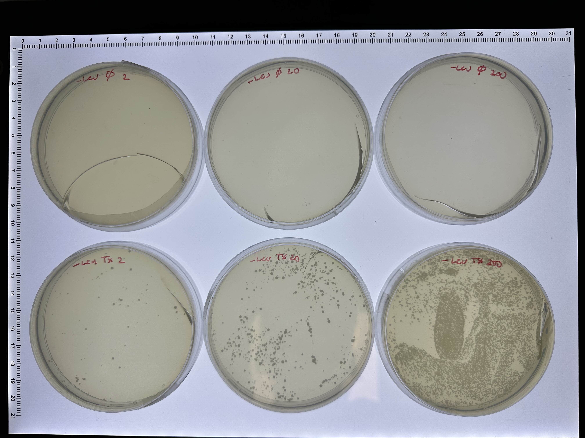
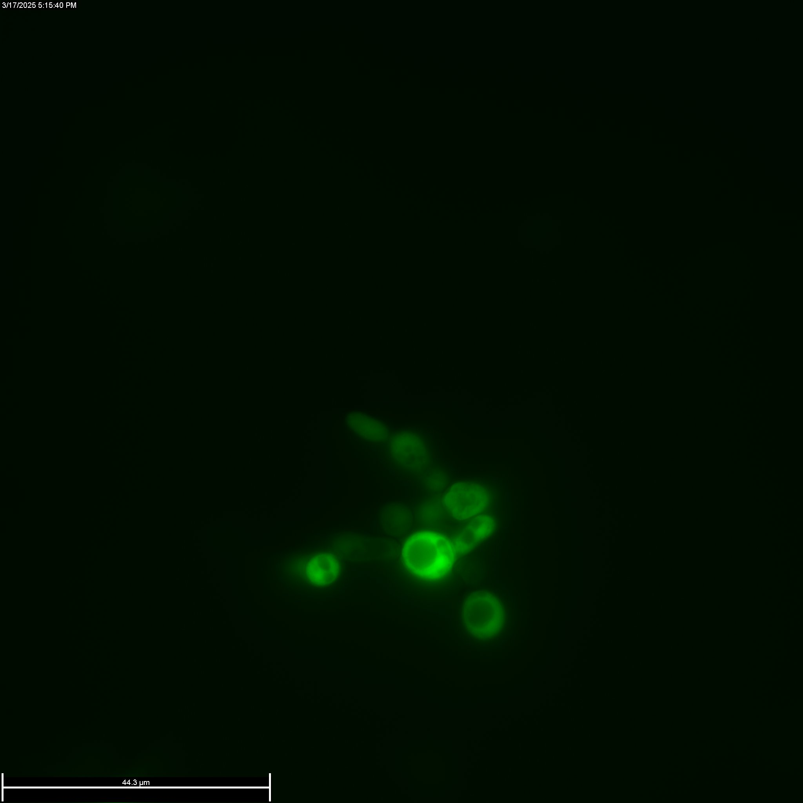
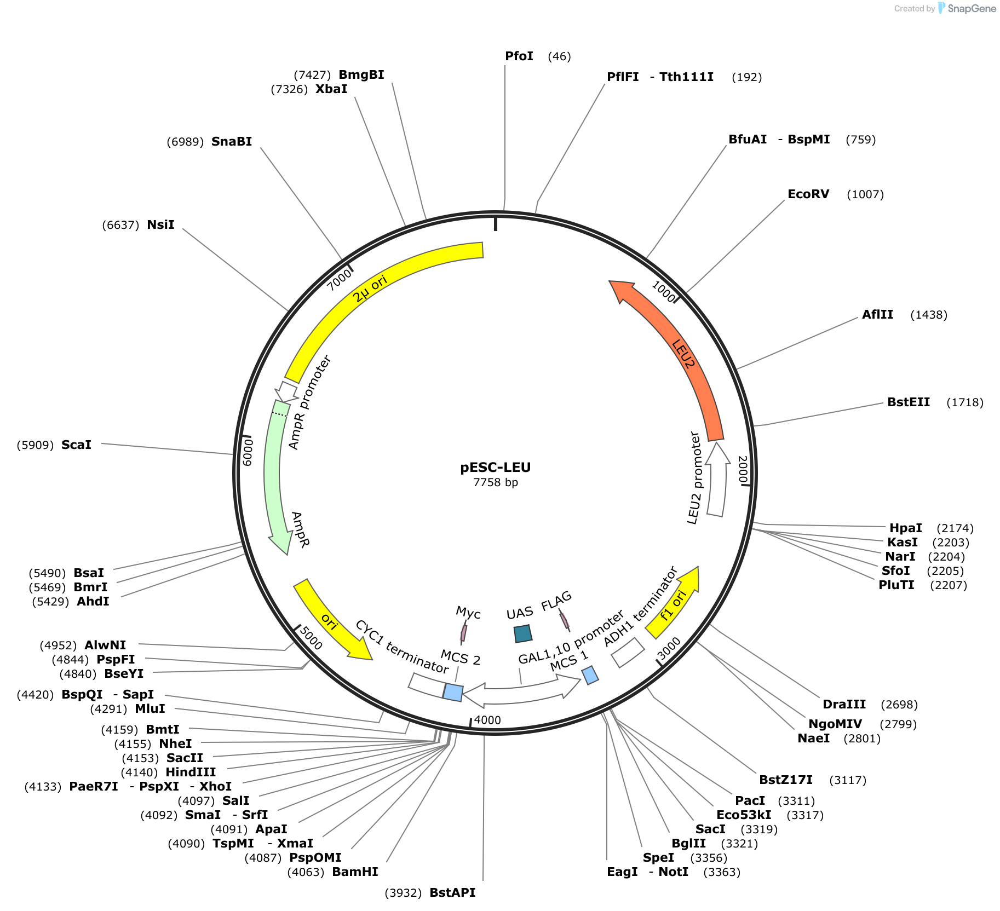

A goal for the future would be to determine the extent of knowledge the cell has of itself and how it uses that knowledge in a thoughtful manner when challenged.
(McClintock 1984)
This note describes how I am recreating the strain from the Braun lab [1] used to demonstrate adaptive reprogramming to novel challenges in the yeast Saccharomyces cerevisiae Unfortunately the strain and plasmid were lost due to a freezer fault. This document is written informally but should be understandable to a reasonably interested secondary school student. For brevity, the main document uses standard scientific terminology, but these terms are explained in detail in the Procedures section.
Overview
In the context of computing, one might think of a single celled organism like a very complex “look-up table”, that is a passive input output device that has been optimized by evolution over very long time scales to give an “optimal” response to an environmental input. In single cell metabolism, inspired by the early work of Monod, this point of view has been very powerful for understanding microbial metabolic regulation. However, the concept of cell learning proposes that cells are not simply look up tables, but are capable of more sophisticated computation. To make this concrete, let’s look at a simplified, idealized “circuit” involved in sugar utilisation. Yeast prefer to use glucose as a carbon source rather than galactose. Prefer here means a few things: First empirically, yeast grow about 50% slower on galactose (~0.4 doublings/hr) than on glucose (~0.2 doublings/hr). Second, yeast have a gene regulatory system called the “catabolite repression system” that turns off the GAL regulon (all the genes required to uptake and utilize galactose) in the presence of glucose. Interestingly, galactose does not seem to be a less efficient source of ATP, but the increased number of enzymes required to bring it into the glycolysis pathway compared to glucose (4 vs. 1) seems to have made it the less preferred sugar. With this in mind, we can write down the input-output function for the two presence or absence of the two sugars (inputs) and the activity of the Gal promoter (output).
| Glucose | Galactose | Gal Promoter Activity |
|---|---|---|
| 0 | 0 | 0 |
| 1 | 0 | 0 |
| 1 | 1 | 0 |
| 0 | 1 | 1 |
Generating this behavior with combinatorial logic could be done as e.g. output = (NOT glucose) AND galactose.
With this view of a cell as a simple evolutionarily optimized input output function, we can ask what would happen if we take this regulatory system and tie its control to a different metabolic output, in this case, to the expression of an enzyme needed to make the amino acid histidine in a yeast that has no other way to make histidine. Then the yeast would face a challenge when grown in glucose, shutting down the promoter means shutting of is only source of histidine. The inherent logic would turn off the Gal promoter but the promoter being on is now required for the yeast to make histidine (and thus to continue to grow). This engineered strain is known as the “Gal-His system”. It was invented by the Braun lab [1]. The traditional view is that genetic changes would be required to rewire the circuit and change the truth table, and that any strain that found the correct mutations to do this would grow and outcompete the others. However, what Braun and colleagues found was that yeast managed to find new steady states of gene expression that allowed the cells to overcome this challenge without mutations, even in single cells that were not dividing [2]. They called this “adaptive reprogramming”. This note describes recreating the “Gal-His System” as a tool to further investigate this phenomenon and probe the mechanisms and limits of the computational capacity of single cells.
Plasmid Reconstruction
The original plasmid was generated by cloning the His3 gene and a GFP gene into the dual expression plasmid pESC-Leu from Agilent. We will use the GFP originally used, a yeast optimized GFP called S65T, but one could use any mutationally optimized GFP originally introduced in [3]. Further information on optimized GFPs can be found in [4], and a comparison of yeast optimized GFPs can be found in [5]. The plasmid has a Leucine selectable marker and a \(2\mu\) origin for yeast a and AmpR selective marker and \(ori\) origin for growth in E. coli. The plasmid contains a bidirectional Gal1/Gal10 promoter and each promoter has a multiple cloning site (MCS).
Cloning
We have used the GFP (S65T) cloned from the pKEN GFP mut2 plasmid. The HIS3 gene was cloned from the plasmid pRS33. MT designed forward and reverse PCR primers to introduce restriction sites for NotI and BglII into the amplified GFP sequence and ApaI and XhoI in the HIS3 gene. The GFP sequence was cloned into the pESC-Leu Gal10 MCS and the HIS3 into the Gal1 MCS in the bi-directional Gal1/Gal10 promoter. Cloning results were confirmed by whole plasmid sequencing.
Yeast Strains
It would be very simple to use store bought yeast for these experiments, and I plan to do that for simpler experiments where no genetic engineering is necessary, however, laboratory strains have many features that make genetic engineering muh easier, such as gene deletions that can be used as selectable markers. For these experiments, we need a yeast strain that cannot make its own Leucine, so that we can use the Lu selectable marker on the plasmid, as well as being unable to make histidine, so that Gal-His construct will be its sole source of histidine during adaptation trials.
The original experiments were done in a yeast strain designated as YPH499. Interestingly, in the supplemental information of this paper by [6], the authors note that this strain has “significantly impaired galactose uptake”. This strain is derived from S288C, which has a known defect in the GAL2 galactose permease gene (a transporter that brings galactose into the cell). The GAL2 gene was supposed to have been repaired in YPH499 but the authors of the above note that there remain a number of point mutations in the coding sequence of the Gal2 galactose transporter compared to the strain K699. They provide evidence that galactose uptake is impaired in the YPH499 strain. We are using the W303 strain, which seems to have the same Gal2 sequence as the K699 stain save one residue at 369.
Our sequencing results revealed nine point mutations in the YPH499 GAL2 sequence, yielding the following five amino acid mutations: V8M P50S S90G Y369S R392H.
They then use a fluorescent fusion GAL2p and show that is distribution is not uniform on the cell membrane in YPH499 as it is in another strain K699 which has teh wild-type GAL sequence. The strains I have easily available are the W303 strain and the BY4743 strains. The W303 strain is only 85.4% congenic with S288c (and thus with YPH499)
For Gal2, W303 is closer to K699 than to YPH499. For the residues noted, K699 has the residues [VPSYR], YPH499 has the residues [MSGSH] and our strain W303 has [VPSSR] according to publicly available sequencing data.
Transformation
The completed pESC-Leu_Gal-His plasmid was transfected into competent yeast cells using the LiAc procedure [7]. We followed the protocols given in [8] for making competent cells, and then transformed them following the high-efficiency procedure in [9]. The construct contains a Leucine selectable marker under the control of the native Leu promoter, and the W303 strain carries the leu2-3 allele, therefore only cells successfully transformed will grow on minimal media plates without leucine. Directly after transformation, yeast were grown in recovery media and then plated on selection plates lacking leucine and containing glucose. A mock transformation was also carried out which did not contain any of the plasmid. The results of plating different volumes of the transformation mixture \((2\mu l, 20\mu l, 200\mu l )\) are shown for both the control (\(\emptyset\)) and the plasmid (Tx) after 3 days of growth at 30C.

Transition to galactose
After confirming that the plasmid was successfully transformed, the next step was to turn on the Gal1/10 promoter on the plasmid to ensure that both the HIS3 and GFP genes were cloned properly. To do this, cells were first grown for 3 days in minimal media without leucine and galactose as the sugar. After this culture grew to high OD, these cells were plated on to selection plates with galactose and without histidine. After 3 days, many colonies were seen on these plates, indicating that the HIS3 gene was working. Cells plated on glucose plates without histidine did not show any colonies. Finally fluorescence micrographs were take to ensure that the GFP was being expressed.

Procedures
Cloning
Generating the DNA inserts
This usually involves either cutting the DNA out of an existing source using restriction enzymes1, having the DNA synthesized, or most commonly, amplifying it out of an existing source using the Polymerase Chain Reaction (PCR).
PCR amplification
Polymerase chain reaction, or PCR amplification is a procedure that uses a heat stable DNA polymerase from a thermophilic bacterium called Thermus aquaticus to make copies of a given sequence. To do this, special primers are designed that serve as a starting point for the polymerase to add nucleotides. These primers are designed to bind to the two single srtands of the DNA after it is denatured at high temperature. The Polymerase then extends both primers to the end of the fragment, yielding two new double stranded molecules. This procedure is repeated for 20-30 cycles to greatly amplify the number of molecules.
Plasmids
Plasmids are circles of DNA containing a sequence that tells a certain cell type to replicate it. These are known and origins of replication. Often plasmids have origins that alow them to be replicated in bacteria, as transforming bacteria and growing them is convenient way to amplify the plasmid. For example, the pESC-Leu plasmid that we hav used as a backbone for this work contains three origins shown in yellow in the the plasmid map. The bacterial double stranded DNA origin is denote ori. The f1 ori is a phage derived origin that allows for single stranded replication and packaging into a phage. Both of these operate in bacteria. The \(2\mu\) origin is the yeast replication origin. The identity of the origin control for example the plasmid copy number in the cell. In addition, cells usually cannot maintain reliably different plasmids with the same origin.

For more information about plasmid origins of replication, see this Addgene article
Restriction Enzymes
Restriction enzymes are proteins that recognize a specific sequence in DNA and cleave the DNA in a predictable manner. Restriction enzymes can be purchased from New England Biolabs.
Restriction PCR
Restriction sites can be introduced into PCR amplified inserts by designing primers which have a complementary binding region to the fragment to be amplified, and a non complementary region that contains the restriction enzyme recognition site. Usually, a few extra bases are added on the other side of the enzyme recognition site as well to make the enzyme more efficient at cutting the fragment. Below is a table of the PCR amplification primers used. Within the complementary region, the start codon ATG is indicated in uppercase.
| Name | Extra Bases | RE Site | Complementary region |
|---|---|---|---|
| GFPs65t-NotI-FW | aaaacc | gcggccgc | atacatATGagtaaaggagaagaac |
| GFPs65t-BglII-RV | aaaagg | agatct | ttatttgtatagttcatccatgcc |
| HIS3-ApaI-FW | aaaacc | gggccc | caaagATGacagagcagaaagc |
| HIS3-XhoI-RV | aaaagg | ctcgag | ctacataagaacacctttggtgg |
Yeast Liquid Culture
YPAD
Yeast are easily grown in complex liquid media containing Yeast Extract, Peptone, Adenine, and Dextrose (D-Glucose), commonly abbreviated YPAD. 1x YPAD contains 1% (w/v) Bacto yeast extract, 2% (w/v) Bacto peptone. 2% (w/v) Glucose, and adenine hemisulfate 80 mg/l. For 1l of media, this corresponds to 10g yeast extract, 20g peptone, 20g Glucose, and 80mg adenine.
Synthetic Dropout Media
I am using Yeast Nitrogen Base and Complete Supplement Mixtures (CSM) from Formedium. The recipe for the YNB is as follows:
Formedium Yeast Nitrogen Base
| Formula | mg/L |
|---|---|
| Biotin | 0.002 |
| Ca-Panthotenate | 0.4 |
| Folic acid | 0.002 |
| Inositol | 2 |
| Nicotinic Acid (Niacin) | 0.4 |
| p-Aminobenzoic Acid | 0.2 |
| Pyridoxine HCl | 0.4 |
| Riboflavin | 0.2 |
| Thiamine HCl | 0.4 |
| Boric Acid | 0.5 |
| Copper Sulfate | 0.04 |
| Potassium Iodide | 0.1 |
| Ferric Chloride | 0.2 |
| Manganese Sulfate | 0.4 |
| Sodium Molybdate | 0.2 |
| Zinc Sulfate | 0.4 |
| Potassium Phosphate, monobasic | 1000 |
| Magnesium Sulphate, anhydrous | 500 |
| Sodium Chloride | 100 |
| Calcium Chloride, anhydrous | 100 |
| Ammonium Sulphate | 5000 |
Suspend 6.9 g powdered medium in 1 L distilled water.
Store dry at room temperature.
The recipe per liter for the YNB from Sigma calls for 6.7g/l and in their work, Braun et al. used 1.7g/l for their plates and liquid media. Thus, we should use (1.7/6.7)*6.9=1.75g/l in our recreated recipe. Braun et al added 5g/l Ammonium Sulfate which corresponds to our YNB.
For the Complete supplement mixtures, Braun et al. used Sigma Synthetic dropout medium supplements Y2001 with all standard amino acids except for histidine, leucine, tryptophan and uracil. Each amino acid is present at a concentration of 76 mg/L. Other nutrients: Adenine (18 mg/L), inositol (76 mg/L), p-aminobenzoic acid (8 mg/L) and to which they added 0.006 g/liter L-tryptophan, and 0.003 g/liter uracil. Braun et al used the full 1.4g/l called for.
| Formula | mg/L |
|---|---|
| Adenine | 10 |
| L-Arginine | 50 |
| L-Aspartic acid | 80 |
| L-Histidine HCl | 20 |
| L-Isoleucine | 50 |
| L-Leucine | 100 |
| L-Lysine HCl | 50 |
| L-Methionine | 20 |
| L-Phenylalanine | 50 |
| L-Threonine | 100 |
| L-Tryptophan | 50 |
| L-Tyrosine | 50 |
| Uracil | 20 |
| Valine | 140 |
| TOTAL | 790 |
Yeast Plating
Liquid cultures of yeast are diluted and spread on solid media plates in order to facilitate the selection of a colony, which is presumably generated from a single cell. This procedure minimizes genetic variation in the population of cells used to start a new culture, but also bottlenecks the culture (potentially fixing any mutations that have arisen). For this procedure to work, the liquid culture must be sufficiently diluted so that only \(\approx10^1-10^2\) cells are spread on each plate. The following will describe how to carry out this procedure.
Producing solid media plates
Generally the solid media used is a solidified gel made of Agar derived from red algae. For general growth and maintenance it is most important that the yeast have sufficient nutrients, and the exact composition is generally less important, so for these tasks, so-called complex media is used, the standard being YPD (Yeast extract, Peptone, Dextrose) media. To make YPD Agar plates, the yeast extract, peptone, and agar are autoclaved together, then cooled to around 65C and the sterile glucose is added aseptically. The liquified agar media is then poured into dishes (Petri dishes) of the appropriate size (90 mm).
Dextrose/Glucose Solution
To start measure 100ml of purified water using a graduated cylinder. Then measure 40g of glucose. If you have a hot-plate stirrer, set the hot plate to 75C and place a magnetic stir bar into a 250ml Erlenmeyer flask. Slowly add the glucose to the stirred water about 5 grams at a time, allowing it to completely dissolve between additions. The glucose solution is not autoclaved, as it can lead to degradation. Therefore it is necessary to sterilize it by passing it through a filter with 0.22 micron pore size (“sterile filtering”) which is small enough to remove most bacteria and viruses.
Selection plates
For this work, selection plates were made from yeast nitrogen base without amino acids from Formedium was used. To this CSM single drop outs for leucine, histidine, or both were added (both containing additional adenosine to 40mg/l). These are prepared in the same way as the complex media plates, with the addition of glucose or galactose done aseptically after autoclaving.
Yeast Strains
A yeast strain is a term used to indicate a yeast that has a collection of defined mutations relative to a reference strain, often called the wild-type strain. Sometimes strains are created to have properties that make them easier to work with, for example, a strain might carry a mutation that renders it unable to grow without an externally provided amino acid. When growing this strain, the growth can be controlled by limiting how much of this amino acid is provided. A list of commonly used yeast strains can be found on the Saccharomyces Genome Database
W303
We are working with a derivative of the W303 strain, which is itself a derivative of the S88C strain. This strain has genotype MATa/MATα {leu2-3,112 trp1-1 can1-100 ura3-1 ade2-1 his3-11,15} [phi+]
Transformation
Transformation refers to the uptake of external or foreign DNA into a cell. This is usually achieved by disrupting the membrane in some way, such as using chemicals (chemical transformation), large electrical fields (electoporation), or high temperatures (heat shock transformation). Transformation generally involves making Competent cells which are cells prepared in such a way that they more easily take up foreign DNA, and then introducing that foreign DNA into the cells by either chemical, heat-shock, or electroporation. For yeast, a combination of the chemical Lithium Acetate and heat-shock is often used.
Competent Cells
Competent cells are cells at are specially prepared to be receptive to the uptake of external DNA. For most transformation procedures, this involves starting with a healthy exponentially growing population, concentrating it, and in the case of chemical or thermal transformation, adding a chemical that aids in membrane permeabilization, such as dimethyl sulfoxide (DMSO). FInally, if the cells are to be frozen for later use, a cryoprotectant such as glycerol is added. We made competent cells following the protocol in [8].
Lithium Acetate Transformation
The LiAc (lithium acetate) protocol [7] is a popular method for yeast transformation that is a combination of chemical and heat shock transformations. Competent yeast cells are treated with lithium acetate, which permeabilizes the cell wall. Additional single stranded DNA, often boiled salmon sperm DNA (boiling denatures the DNA making it single stranded), and polyethylene glycol (PEG) are added to facilitate DNA uptake, and a brief heat shock helps the DNA enter the cells. We used the protocols outlines in [9]. A quicker method for easier transformations is also given in [10],
Selectable Markers
Selectable markers are a combination of a selection pressure, and a gene allows a microbe to avoid that selective pressure. One of the most commonly used selectable markers is the combination of an antibiotic and an antibiotic resistance gene in bacteria. In this scheme, plasmids to be transformed are engineered to contain an antibiotic resistance gene, such as beta-lactamase, and then transformed bacteria are grown on plates that contain a beta-lactam antibiotic, such as ampicillin. There are many bacterial antibiotic/resistance markers, such as chloramphenicol, kanamycin, and tetracycline. Continued growth on antibiotic containing plates even after the initial transformation allows one to ensure that the plasmid is maintained in the population. Growth on non-selective media can result in plasmid loss over time. In yeast, most commonly auxotrophic markers are used. In this case, the selective pressure is a deletion of a native gene used to make a particular metabolite, often an amino acid. These cells then require that amino acid to be supplemented in the growth media. However, if the cell is transformed with the gene or an enzyme that rescues its ability to make this metabolite, it can then be grown in media without that supplemental metabolite. In this way, continued growth in a media without the metabolite ensures that the plasmid is maintained.
References
Footnotes
enzymes that recognize and cut a specific DNA sequence↩︎